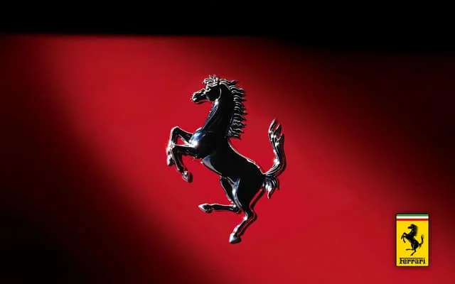
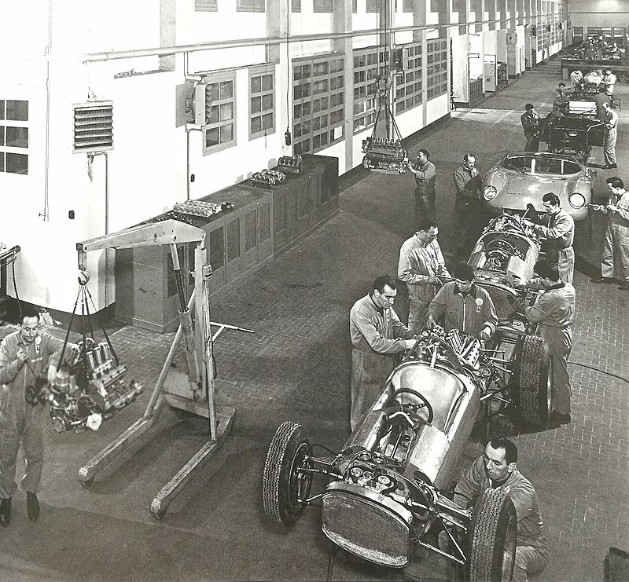
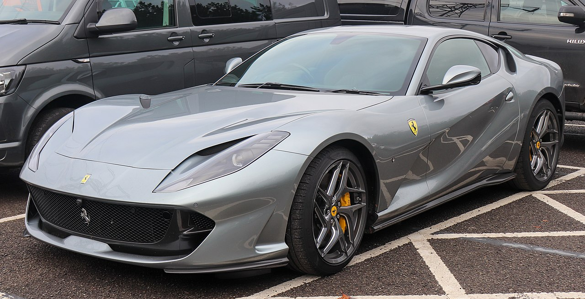
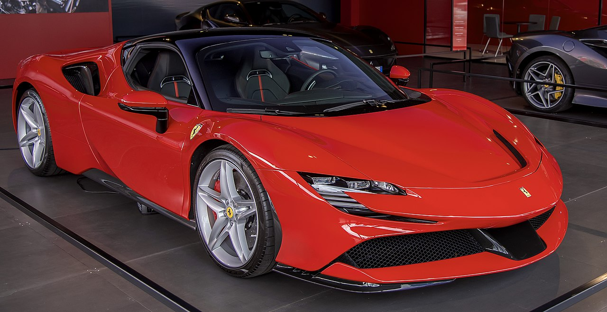
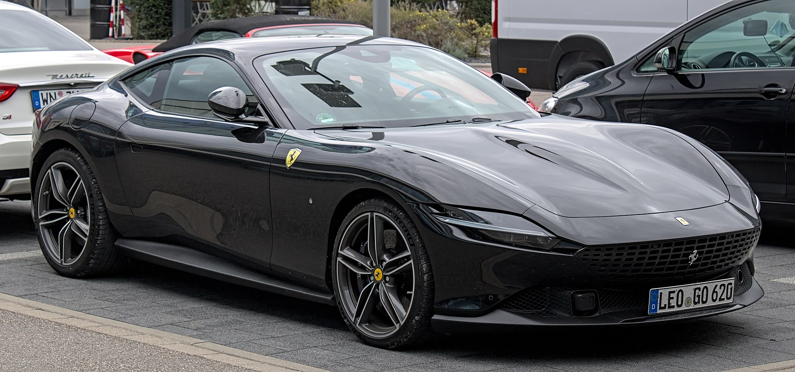
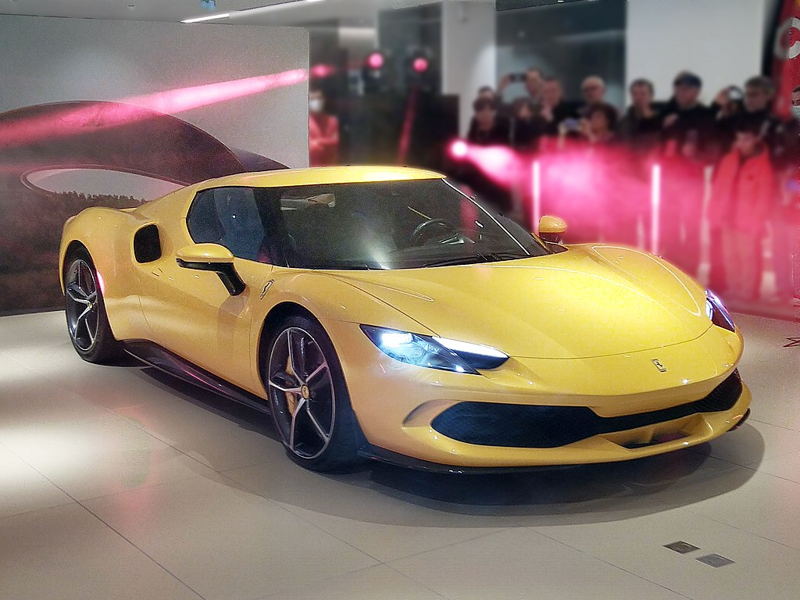
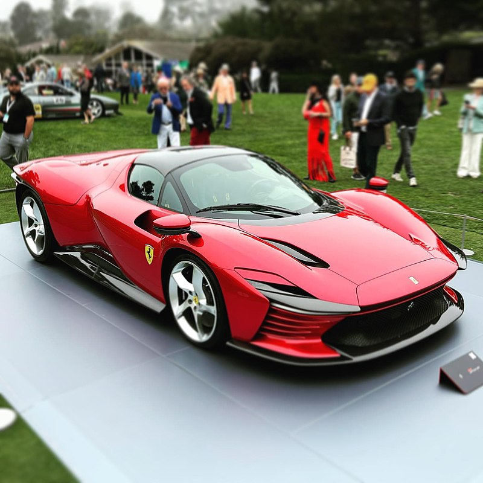
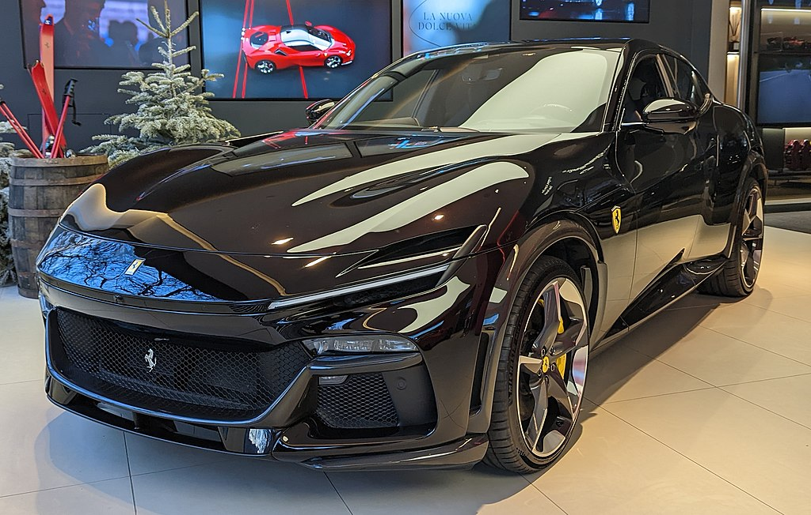

Ferrari
Ferrari S.p.A. is an Italian luxury sports car manufacturer based in Maranello, Italy. Founded in 1939 by Enzo Ferrari (1898–1988), the company built its first car, a sports racing car, in 1940. It adopted its current name in 1945, and began to produce its current line of road cars in 1947. Ferrari became a public company in 1960, and from 1963 to 2014 it was a subsidiary of Fiat S.p.A. It was spun off from Fiat's successor entity, Fiat Chrysler Automobiles, in 2016.
The company currently offers a large model range which includes several supercars, grand tourers, and one SUV. Many early Ferraris, dating to the 1950s and 1960s, count among the most expensive cars ever sold at auction. Owing to a combination of its cars, enthusiast culture, and successful licensing deals, in 2019 Ferrari was labelled the world's strongest brand by the financial consultency Brand Finance. As of May 2023 Ferrari is also one of the largest car manufacturers by market capitalisation, with a value of approximately US$52 billion.
Throughout its history, the company has been noted for its continued participation in racing, especially in Formula One, where its team, Scuderia Ferrari, are the series' single oldest and most successful. Scuderia Ferrari have raced since 1929, first in Grand Prix events and later in Formula One, where since 1952 they have fielded fifteen champion drivers, won sixteen Constructors' Championships, and accumulated more race victories, 1–2 finishes, podiums, pole positions, fastest laps and points than any other team in F1 history. Historically, Ferrari was also highly active in sports car racing, where its cars took many victories in races like the Mille Miglia, Targa Florio and 24 Hours of Le Mans, as well as overall victories in the World Sportscar Championship. Scuderia Ferrari fans, commonly called tifosi, are known for their passion and loyalty to the team.


History
Early history
Enzo Ferrari, formerly a salesman and racing driver for Alfa Romeo, founded Scuderia Ferrari, a racing team, in 1929. Originally intended to service gentleman drivers and other amateur racers, Alfa Romeo's withdrawal from racing in 1933, combined with Enzo's connections within the company, turned Scuderia Ferrari into its unofficial representative on the track. Alfa Romeo supplied racing cars to Ferrari, who eventually amassed some of the best drivers of the 1930s and won many races before the team's liquidation in 1937.
Late in 1937, Scuderia Ferrari was liquidated and absorbed into Alfa Romeo, but Enzo's disagreements with upper management caused him to leave in 1939. He used his settlement to found his own company, where he intended to produce his own cars. He called the company "Auto Avio Costruzioni", and headquartered it in the facilities of the old Scuderia Ferrari. due to a noncompete agreement with Alfa Romeo, the company could not use the Ferrari name for another four years. The company produced a single car, the Auto Avio Costruzioni 815, which participated in only one race before the outbreak of World War II. During the war, Enzo's company produced aircraft engines and machine tools for the Italian military; the contracts for these goods were lucrative, and provided the new company with a great deal of capital. In 1943, under threat of Allied bombing raids, the company's factory was moved to Maranello. Though the new facility was nonetheless bombed twice, Ferrari remains in Maranello to this day.
Under Enzo Ferrari
In 1945, Ferrari adopted its current name. Work started promptly on a new V12 engine that would power the 125 S, which was the marque's first car, and many subsequent Ferraris. The company saw success in motorsport almost as soon as it began racing: the 125 S won many races in 1947, and several early victories, including the 1949 24 Hours of Le Mans and 1951 Carrera Panamericana, helped build Ferrari's reputation as a high-quality automaker. Ferrari won several more races in the coming years, and early in the 1950s its road cars were already a favourite of the international elite. Ferrari produced many families of interrelated cars, including the America, Monza, and 250 series, and the company's first series-produced car was the 250 GT Coupé, beginning in 1958.
In 1960, Ferrari was reorganized as a public company. It soon began searching for a business partner to handle its manufacturing operations: it first approached Ford in 1963, though negotiations fell through; later talks with Fiat, who bought 50% of Ferrari's shares in 1969, were more successful. In the second half of the decade, Ferrari also produced two cars that upended its more traditional models: the 1967 Dino 206 GT, which was its first mass-produced mid-engined road car, and the 1968 365 GTB/4, which possessed streamlined styling that modernised Ferrari's design language. The Dino in particular was a decisive movement away from the company's conservative engineering approach, where every road-going Ferrari featured a V12 engine placed in the front of the car, and it presaged Ferrari's full embrace of mid-engine architecture, as well as V6 and V8 engines, in the 1970s and 1980s.

Contemporary
Enzo Ferrari died in 1988, an event that saw Fiat expand its stake to 90%.[28] The last car that he personally approved — the F40 — expanded on the flagship supercar approach first tried by the 288 GTO four years earlier. Enzo was replaced in 1991 by Luca Cordero di Montezemolo, under whose 23-year-long chairmanship the company greatly expanded. Between 1991 and 2014, he increased the profitability of Ferrari's road cars nearly tenfold, both by increasing the range of cars offered and through limiting the total number produced. Montezemolo's chairmanship also saw an expansion in licensing deals, a drastic improvement in Ferrari's Formula One performance (not least through the hiring of Michael Schumacher and Jean Todt), and the production of three more flagship cars: the F50, the Enzo, and the LaFerrari. In addition to his leadership of Ferrari, Montezemolo was also the chairman of Fiat proper between 2004 and 2010.
After Montezemolo resigned, he was replaced in quick succession by many new chairmen and CEOs. He was succeeded first by Sergio Marchionne, who would oversee Ferrari's initial public offering and subsequent spin-off from Fiat Chrysler Automobiles, and then by Louis Camilleri as CEO and John Elkann as chairman. Beginning in 2021, Camilleri was replaced as CEO by Benedetto Vigna, who has announced plans to develop Ferrari's first fully electric model. During this period, Ferrari has expanded its production, owing to a global increase in wealth, while becoming more selective with its licensing deals.
Motorsport
Since the company's beginnings, Ferrari has been involved in motorsport. Through its works team, Scuderia Ferrari, it has competed in a range of categories including Formula One and sports car racing, though the company has also worked in partnership with other teams.
Grand Prix and Formula One racing
The earliest Ferrari entity, Scuderia Ferrari, was created in 1929 — ten years before the founding of Ferrari proper — as a Grand Prix racing team. They were affiliated with automaker Alfa Romeo, for whom Enzo had worked in the 1920s. Alfa Romeo supplied racing cars to Ferrari, which the team then tuned and adjusted to their desired specifications. Scuderia Ferrari were highly successful in the 1930s: between 1929 and 1937 they fielded such top drivers as Antonio Ascari, Giuseppe Campari, and Tazio Nuvolari, and won 144 out of their 225 races.
Ferrari returned to Grand Prix racing in 1947, which was at that point metamorphosing into modern-day Formula One. The team's first homebuilt Grand Prix car, the 125 F1, was first raced at the 1948 Italian Grand Prix, where its encouraging performance convinced Enzo to continue the company's costly Grand Prix racing programme.
Ferrari's first victory in an F1 series was at the 1951 British Grand Prix, heralding their strong performance during the 1950s and early 1960s: between 1952 and 1964, the team took home six World Drivers' Championships and one Constructors' Championship. Notable Ferrari drivers from this era include Alberto Ascari, Juan Manuel Fangio, Phil Hill, and John Surtees.
Ferrari's initial fortunes ran dry after 1964, and they began to receive their titles in isolated sprees. Ferrari started to slip in the late 1960s, when they were outclassed by teams using the inexpensive, well-engineered Cosworth DFV engine. The team's performance improved markedly in the mid-1970s thanks to Niki Lauda, whose skill behind the wheel granted Ferrari a drivers' title in 1975 and 1977; similar success was accomplished in following years by the likes of Jody Scheckter and Gilles Villeneuve. The team won another Constructors' Championship in 1983.
Following another drought in the 1980s and 1990s, Ferrari saw a long winning streak in the 2000s, largely through the work of Michael Schumacher. After signing onto the team in 1996, Schumacher gave Ferrari five consecutive drivers' titles between 2000 and 2004; this was accompanied by six consecutive constructors' titles, beginning in 1999. Ferrari were especially dominant in the 2004 season, where they lost only three races.After Schumacher's departure, Ferrari won one more drivers' title — given in 2007 to Kimi Räikkönen — and two constructors' titles in 2007 and 2008. These are the team's most recent titles to date; as of late, Ferrari have struggled to outdo recently ascendant teams like Red Bull and Mercedes-Benz.

Ferrari Driver Academy
Ferrari's junior driver programme is the Ferrari Driver Academy. Begun in 2009, the initiative follows the team's successful grooming of Felipe Massa between 2003 and 2006. Drivers who are accepted into the Academy learn the rules and history of formula racing as they compete, with Ferrari's support, in feeder classes such as Formula Three and Formula 4. As of 2019, 5 out of 18 programme inductees had graduated and become F1 drivers: one of these drivers came to race for Scuderia Ferrari, while the other four signed to other teams. Non-graduate drivers have participated in racing development, filled consultant roles, or left the Academy to continue racing in lower-tier formulae.
Sports car racing
Aside from an abortive effort in 1940, Ferrari began racing sports cars in 1947, when the 125 S won six out of the ten races it participated in. Ferrari continued to see similar luck in the years to follow: by 1957, just ten years after beginning to compete, Ferrari had won three World Sportscar Championships, seven victories in the Mille Miglia, and two victories at the 24 Hours of Le Mans, among many other races.
This luck continued into the first half of the 1960s, when Ferrari won the WSC's 2000GT class three consecutive times and finished first at Le Mans for six consecutive years.[44][45] Its winning streak at Le Mans was broken by Ford in 1966, and though Ferrari would win two more WSC titles — one in 1967 and another in 1972 — poor revenue allocation, combined with languishing performance in Formula One, led the company to cease competing in sports car events in 1973. From that point onward, Ferrari would help prepare sports racing cars for privateer teams, but would not race them itself.

In 2023, Ferrari reentered sports car racing in force. For the 2023 FIA World Endurance Championship, Ferrari, in partnership with AF Corse, has fielded two 499P sports prototypes. To commemorate the company's return to the discipline, one of the cars is numbered "50," referencing the fifty years that have elapsed since a works Ferrari has competed in an endurance race. The 499P finished first at the 2023 24 Hours of Le Mans, ending Toyota's six-year winning streak and becoming the first Ferrari in 58 years to win the race.
Other disciplines
Ferrari formerly participated in a variety of non-F1 open-wheel series. As early as 1948, Ferrari had developed cars for Formula Two and Formula Libre events, and the company's F2 programme led directly to the creation of the Dino engine, which came to power various racing and road Ferraris. The final non-F1 series in which Ferrari competed was the Tasman Series, wherein Chris Amon won the 1969 championship in a Dino 246 Tasmania.
At least two water speed record boats have utilized Ferrari powertrains, both of them 800kg-class hydroplanes from the early 1950s. Neither boat was built by or affiliated with Ferrari, though one of them, Arno XI, had its engine order approved directly by Enzo Ferrari. Arno XI still holds the top speed record for an 800kg hydroplane.
Race cars for other teams
Throughout its history, Ferrari has supplied racing cars to other entrants, aside from its own works Scuderia Ferrari team. In the 1950s and '60s, Ferrari supplied Formula One cars to a number of private entrants and other teams. One famous example was Tony Vandervell's team, which raced the Thinwall Special modified Ferraris before building their own Vanwall cars. The North American Racing Team's entries in the final three rounds of the 1969 season were the last occasions on which a team other than Scuderia Ferrari entered a World Championship Grand Prix with a Ferrari car.
Ferrari supplied cars complete with V8 engines for the A1 Grand Prix series, from the 2008–09 season. The car was designed by Rory Byrne and is styled to resemble the 2004 Ferrari Formula one car.
Ferrari currently runs a customer GT program for a racing version of its 458 and has done so for the 458's predecessors, dating back to the 355 in the late 1990s. Such private teams as the American Risi Competizione and Italian AF Corse teams have been very successful with Ferrari GT racers over the years. This car, made for endurance sportscar racing to compete against such racing versions of the Audi R8, McLaren MP4-12C, and BMW Z4 (E89) has proven to be successful, but not as successful as its predecessor, the F430. The Ferrari Challenge is a one-make racing series for the Ferrari 458. The FXX is not road legal and is therefore only used for track events.
Road cars
The first vehicle made with the Ferrari name was the 125 S. Only two of this small two-seat sports/racing V12 car were made. In 1949, the 166 Inter was introduced marking the company's significant move into the grand touring road car market. The first 166 Inter was a four-seat (2+2) berlinetta coupe with body work designed by Carrozzeria Touring Superleggera. Road cars quickly became the bulk of Ferrari sales.

The early Ferrari cars typically featured bodywork designed and customised by independent coachbuilders such as Pininfarina, Scaglietti, Zagato, Vignale and Bertone.
The original road cars were typically two-seat front-engined V12s. This platform served Ferrari very well through the 1950s and 1960s. In 1968 the Dino was introduced as the first two-seat rear mid-engined Ferrari. The Dino was produced primarily with a V6 engine, however, a V8 model was also developed. This rear mid-engine layout would go on to be used in many Ferraris of the 1980s, 1990s and to the present day. Current road cars typically use V8 or V12 engines, with V8 models making up well over half of the marque's total production. Historically, Ferrari has also produced flat 12 engines.
For a time, Ferrari built 2+2 versions of its mid-engined V8 cars. Although they looked quite different from their 2-seat counterparts, both the GT4 and Mondial were closely related to the 308 GTB.
Ferrari entered the mid-engined 12-cylinder fray with the Berlinetta Boxer in 1973. The later Testarossa (also mid-engined 12 cylinders) remains one of the most popular and famous Ferrari road cars of all time.
The company has also produced several front-engined 2+2 cars, culminating in the recent V12 model Lusso and V8 models Roma, Portofino and Lusso T. The California is credited with initiating the popular current model line of V8 front-engined 2+2 grand touring performance sports cars.
Starting in the early 2010s with the LaFerrari, the focus was shifted away from the use of independent coach builders to what is now the standard, Ferrari relying on in-house design from the Centro Stile Ferrari for the design of all its road cars.
Current models

Ferrari 812 Superfast

Monza SP1

Monza SP2

F8

SF90 stradale

Roma

296 GTB

Daytona SP3

Purosangue
customisation
In the 1950s and 1960s, clients often personalized their vehicles as they came straight from the factory. This philosophy added to the mystique of the brand. Every Ferrari that comes out of Maranello is built to an individual customer's specification. In this sense, each vehicle is a unique result of a specific client's desire.
Ferrari formalized this concept with its earlier Carrozzeria Scaglietti programme. The options offered here were more typical such as racing seats, rearview cameras, and other special trim. In late 2011, Ferrari announced a significant update of this philosophy. The Tailor Made programme allows clients to work with designers in Maranello to make decisions at every step of the process. Through this program almost any trim, any exterior color or any interior material is possible. The program carries on the original tradition and emphasizes the idea of each car being unique.
Supercars
The 1984 288 GTO may be considered the first in the line of Ferrari supercars. This pedigree extends through the Enzo Ferrari to the LaFerrari. In February 2019, at the 89th Geneva International Motor Show, Ferrari revealed its latest mid-engine V8 supercar, the F8 Tributo.
Ferrari SF90 Stradale is the first-ever Ferrari to feature PHEV (Plug-in Hybrid Electric Vehicle) architecture which sees the internal combustion engine integrated with three electric motors, two of which are independent and located on the front axle, with the third at the rear between the engine and the gearbox.
Concept cars and specials
Ferrari has produced a number of concept cars, such as the Mythos. While some of these were quite radical (such as the Modulo) and never intended for production, others such as the Mythos have shown styling elements that were later incorporated into production models.
The most recent concept car to be produced by Ferrari themselves was the 2010 Millechili.
A number of one-off special versions of Ferrari road cars have also been produced, commissioned to coachbuilders by wealthy owners. Recent examples include the P4/5 and the 612 Kappa.